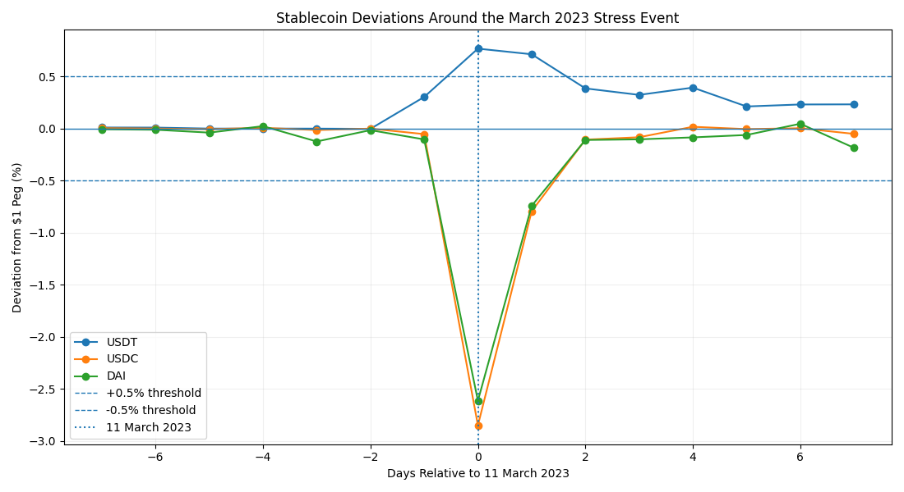

The research question
How do stablecoin depegging episodes differ in severity and recovery, and what associations exist between daily peg deviations, other stablecoins and wider market stress?
This MSc dissertation studies USDT, USDC and DAI over 2021–2026. It combines episode detection, recovery analysis, stress-period correlations, a March 2023 case study and regression robustness checks.
The approach
A consistent peg band
Identify daily closing prices outside $0.995–$1.005 and compare one-day and two-day recovery confirmation rules.
Recovery, co-movement and event sensitivity
Compare normal and stress days, inspect the March 2023 episode and test sensitivity to selected date exclusions.
Regression with robustness comparisons
Regress daily absolute peg deviations on Bitcoin volatility, VIX and Treasury-yield changes using HAC/Newey–West standard errors.
What the research found
USDC and DAI moved below parity together in March 2023 while USDT traded above its peg. Excluding the key March dates reduced the USDC–DAI stress correlation substantially.

| Measure | Reported finding |
|---|---|
| Episode count | 11: nine DAI, one USDC and one USDT |
| Recovery | Mean 1.36 calendar days; range 1–2 days |
| USDC–DAI stress correlation | 0.858 across 12 stress days |
| After excluding 11–12 March 2023 | 0.327 across 10 remaining stress days |
Sources: dissertation Tables 1–3, pages 21–22. Episode counts exclude a suspected 17 April 2021 data anomaly and use two-day recovery confirmation. Baseline stress correlations retain that date.
Bitcoin volatility was positively associated with absolute daily peg deviations for all three coins. The baseline models used 1,430 observations per coin and had adjusted R² values of approximately 0.026–0.053, indicating limited explanatory power.
Research implications
- Assess severity and recovery duration alongside whether a coin crosses a peg threshold.
- Check whether apparent stress relationships survive the exclusion of a single major event.
- Interpret market-indicator coefficients as conditional associations, with no claim of causal contagion or a validated trading strategy.
Scope and limitations
Only 11 episodes meet the preferred definition, and nine involve DAI. Several coin episodes share the same market shock. The recovery sample is therefore small and concentrated.
Daily prices miss intraday extremes. Results depend on the peg band, confirmation rule, calendar alignment and date exclusions. Contemporaneous regressions cannot establish causal direction or out-of-sample predictive performance.
Explore the work
Source: MSc dissertation, Chapters 3–6. The case study shares summary findings and the original event figure; source datasets are not redistributed.